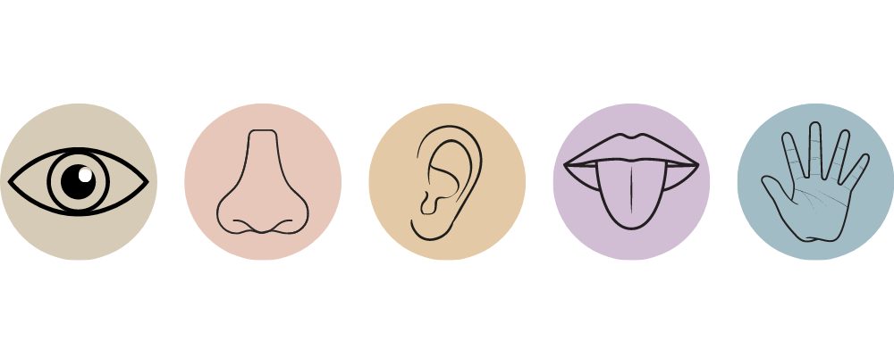

History of Synaesthesia
Learn all about the condition and discover major milestones of its fascinating history
Use your mouse to scroll or use to reveal each section
What is Synaesthesia?
A condition which causes unusual sensory perceptions and cognitive experiences.
For example, visual input could trigger unrelated, distinct tastes.
Sound or music could elicit visual experiences such as colour and shapes.
Graphemes such as letters and numbers can invoke feelings or visual perceptions of colour or texture.

The thought of sequences such as days of the week, numbers or the alphabet could be experienced visually, either in the mind's eye or in physical space.
It is quite common for a "synaesthete" (a person who has Synaesthesia) to have multiple forms of the condition.
Synaesthesia is...
INVOLUNTARY
ADDITIVE
IDIOSYNCRATIC
CONSISTENT
Hover to learn more.
What causes Synaesthesia?

Synaesthetes have atypical patterns of connectivity in the brain. This can cause the parts of the brain responsible for the senses to "hyper-activate" when they receive particular sensory input.
There are certain gene variants responsible for causing Synaesthesia. Therefore, Synaesthesia often runs in families with these genetic differences.
A BRIEF HISTORY OF
SYNAESTHESIA
1812
The first known documented case of Synaesthesia appears in a doctural thesis by Georg Tobias Ludwich Sachs who had multiple types of Synaesthesia. Hover over the following image to reveal how he perceived letters and numbers:
Sachs also had colours for numbers:
→
0
"Pale Yellow"
1
"Definitely white"
2
"No distinct colour"
3
"Ash-grey"
4
"Vermilion"
5
"Yellow"
6
"Indigo"
7
"Bluish Grey"
8
"Brown"
9
"Dark Green"
1881
"Secondary Sensations"
Bleuler and Lehmann discovered 6 types of Synaesthesia:
1882 → 1892
The term "colour hearing" began circulating around the world to denote all forms of the phenomenon.
1892
Synesthesia
Frenchman Jules Antoine Millet is the first to use the term "synesthesia" for all kinds of combined senses and soon it was accepted as the official name for the condition.
This ended the notion that all unusual sensory perceptions involved colour-only experiences.
1892 → Present
It is not until the late 1990s that scientists begin uncovering the neural and genetic origins of Synaesthesia. Research continues to this day to discover even more about this fascinating condition.